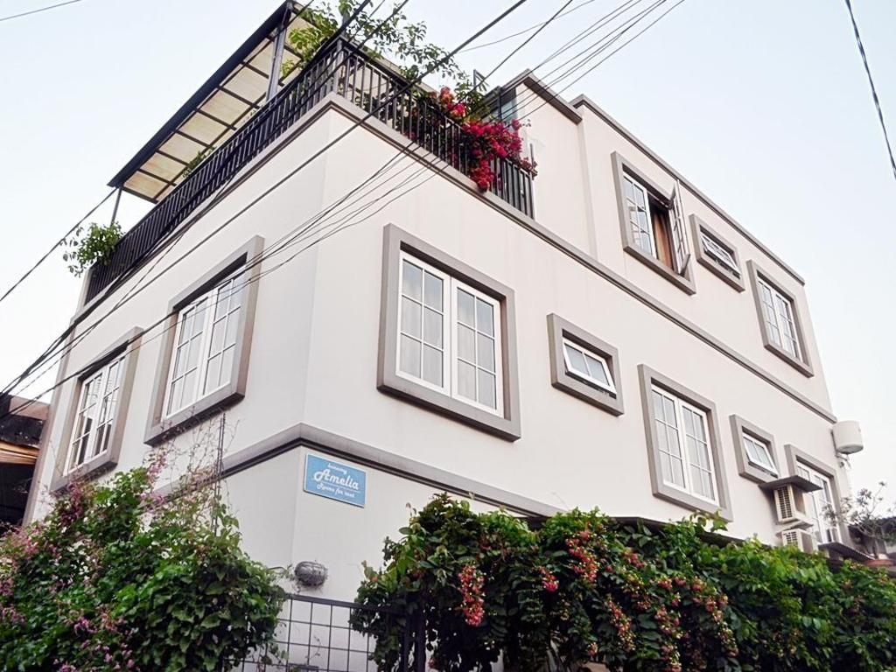
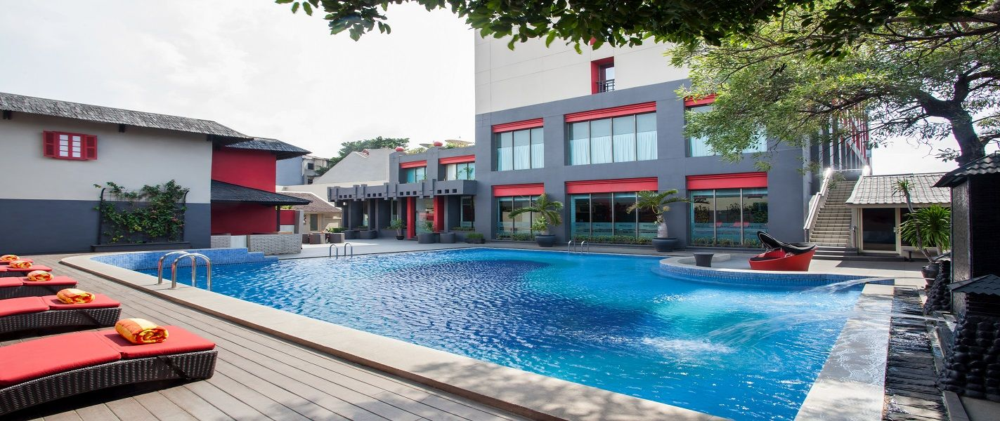
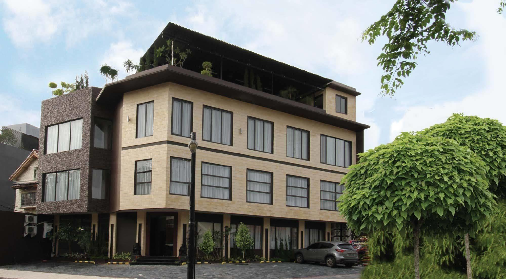

Amelia Homestay
Amelia Homestay adalah sebuah penginapan bintang 1.0 yang terletak di Jakarta, Indonesia. Dengan berbagai fasilitas dan layanan yang disediakan, Amelia Homestay menawarkan pengalaman menginap yang nyaman dan memuaskan bagi para tamu. Dengan waktu check-out hingga pukul 01:00 PM, para tamu dapat menikmati waktu tambahan sebelum meninggalkan penginapan ini. Sedangkan waktu check-in dimulai dari pukul 10:00 AM, memungkinkan tamu untuk segera bersantai dan menikmati kenyamanan kamar mereka begitu tiba.
Asyana Kemayoran Jakarta
Asyana Kemayoran Jakarta adalah hotel dekat bandara null dan merupakan pilihan tepat untuk bermalam sambil menunggu jadwal penerbangan berikutnya. Dapatkan tempat untuk istirahat yang nyaman di tengah persinggahan sementara Anda. Asyana Kemayoran Jakarta memiliki segala fasilitas penunjang bisnis untuk Anda.
Sawana Suites
Sawana Suites merupakan hotel rekomendasi untuk Anda, seorang backpacker yang tak hanya mengutamakan bujet, tapi juga kenyamanan saat beristirahat setelah menempuh petualangan seharian penuh. Bagi Anda yang menginginkan kualitas pelayanan oke dengan harga yang ramah di kantong, Sawana Suites adalah pilihan yang tepat. Karena meski murah, akomodasi ini menyediakan fasilitas memadai dan pelayanan yang tetap terjaga mutunya.